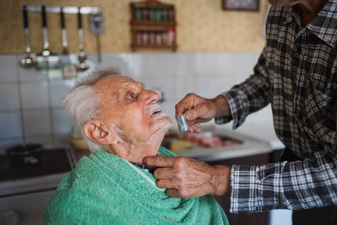
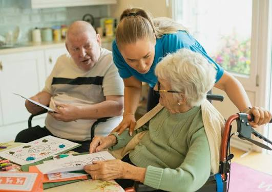

Julius Care provides compassionate non-medical care services designed to help individuals live safely, comfortably, and independently at home.
At Julius Care, we provide dependable non-medical support designed around each individual's needs. Our goal is to promote comfort, dignity, independence, and peace of mind.

Support with daily activities while maintaining dignity, comfort, and independence.
Friendly companionship and emotional support to improve daily living.

Reliable temporary support that gives family caregivers peace of mind.
Helping seniors maintain safety, confidence, and independence.
Assistance with everyday tasks to create a comfortable home environment.
Care solutions designed around each client's unique needs.
Supporting older adults with comfort, safety, and independence at home.
Providing personalized support based on individual needs and routines.
Giving families dependable care support and peace of mind.